건설기계설비산업기사 (2003-03-16 기출문제)
1과목: 기계제작법
1. 연삭 숫돌의 파손 원인이 아닌 것은?
- 숫돌과 공작물, 숫돌과 지지대간에 불순물이 끼었을 경우
- 숫돌이 과도한 고속으로 회전하는 경우
- 숫돌의 측면을 공작물로 심하게 삽입됐을 경우
- 숫돌이 진원이 아닐 경우
(정답률: 알수없음)

2. 어미자의 최소눈금이 0.5mm이고 아들자 24.5mm를 25등분한 버니어캘리퍼스의 최소측정값은 ?
- 0.⑤mm
- 0.01mm
- 0.025mm
- 0.02mm
(정답률: 알수없음)
3. 만네스만식 제관법은 다음의 어느 제관법에 속하는가?
- 단접관법
- 용접관법
- 천공법(piercing process)
- 오무리기법(cupping process)
(정답률: 알수없음)
4. 연삭작업에서 눈메꿈(loading)을 일으킨 칩을 제거하여 깎임새를 회복시키는 작업은?
- 드레싱(dressing)
- 보딩(boarding)
- 크러싱(crushing)
- 셰이핑(shaping)
(정답률: 알수없음)
5. 나사의 측정 대상이 아닌 것은?
- 유효지름
- 리드각
- 산의 각도
- 피치
(정답률: 알수없음)
6. ø 40의 연강봉에 리드(lead)240mm의 비틀림 홈을 밀링에서 깎고자 한다. 이 때 테이블은 몇도 몇분 회전시켜야 하는가?
- 약 27° 38′
- 약 35° 48′
- 약 42° 51′
- 약 50° 06′
(정답률: 알수없음)
7. 선삭(turning)작업에서 일반적으로 하지 않는 것은?
- 기어가공작업
- 나사깎기
- 테이퍼작업
- 널링
(정답률: 알수없음)
8. 압연가공에서 강판을 압연할 때, 사용하는 롤러(roller)는?
- 원통형 roller
- 홈형 roller
- 개방형 roller
- 밀폐형 roller
(정답률: 알수없음)
9. 프레스가공 방식에서 상하형이 서로 무관계한 요철(凹凸)을 가지고 있으며 재료를 압축함으로써 상하면상에는 다른 모양의 각인(刻印)이 되는 가공법은?
- 코이닝 가공(coining work)
- 굽힘가공(bending work)
- 엠보싱가공(embossing work)
- 드로잉가공(drawing work)
(정답률: 알수없음)
10. 파이프끼리 서로 맞대기 용접을 하는데 가장 좋은 용접결과를 얻을 수 있는 것은?
- 가스 압접
- 플래시버트 용접(flash butt welding)
- 고주파 유도 용접
- 초음파 용접
(정답률: 알수없음)
11. 경도가 가장 큰 열처리 조직은?
- 오스테나이트(austenite)
- 마르텐사이트(martensite)
- 솔바이트(sorbite)
- 펄라이트(pearlite)
(정답률: 알수없음)
12. 스프링 백(spring back)이란?
- 스프링에서 장력의 세기를 나타내는 척도이다.
- 스프링의 피치를 나타낸다.
- 판재를 구부릴 때 하중을 제거하면 탄성에 의해 약간 처음 상태로 돌아가는 것이다.
- 판재를 구부렸을 때 구부린 모양이 활 모양으로 되는 현상이다.
(정답률: 알수없음)
13. 직류 아크용접에서 모재에 (+)극, 용접봉에 (-)극을 연결하여 용접할 때의 극성은?
- 역극성
- 정극성
- 용극성
- 모극성
(정답률: 알수없음)
14. 공작물 고정 장치가 없는 지그는?
- 템플릿 지그(template jig)
- 플레이트 지그(plate jig)
- 앵글플레이트 지그(angle plate jig)
- 테이블 지그(table jig)
(정답률: 알수없음)
15. 소성가공에서 열간가공과 냉간가공을 구분하는 온도는?
- 금속이 녹는 온도
- 변태점 온도
- 발광 온도
- 재결정 온도
(정답률: 알수없음)
16. 줄 눈금의 크기 표시가 맞는 것은?
- 1[㎜]2내에 있는 눈금의 수
- 1[㎜]에 대한 눈금의 수
- 1[inch]에 대한 눈금의 수
- 1[inch]2내에 있는 눈금의 수
(정답률: 알수없음)
17. 호닝(honing)작업에서 옳지 않은 것은?
- 가공시간이 짧다.
- 진원도 및 직선도를 바로 잡을 수 있다.
- 크기를 정확히 조절할 수 있다.
- 표면 정밀도를 향상시키지 못한다.
(정답률: 알수없음)
18. 배럴가공(barrel finishing)을 하면 여러가지 결과를 얻을 수 있다. 여기에 해당되지 않는 것은?
- 연삭의 효과
- 스케일 제거
- 버니싱(burnishing) 작용
- 도금의 효과
(정답률: 알수없음)
19. 매치 플레이트(match plate)에 대한 설명 중 맞는 것은?
- 주형에서 소형 제품을 대량으로 생산할 때 사용된다.
- 목형의 평면을 깎을 때 사용된다.
- 주형을 다져 목형을 만들 때 사용된다.
- 주물사의 입도를 분류할 때 사용된다.
(정답률: 알수없음)
20. 공작물의 직경이 ø 50mm인 경강을 세라믹 공구로 절삭속도 300m/min의 조건으로 선삭가공하려고 할 때, 주축 회전수는?
- 약 480rpm
- 약 1350rpm
- 약 1910rpm
- 약 2540rpm
(정답률: 알수없음)
2과목: 재료역학
21. 길이 L의 외팔보가 그 자유단에 집중하중 P를 받고 있을 때의 최대처짐(δmax)은 얼마인가?
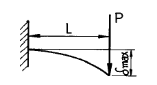
- PL3/3EI
- PL3/6EI
- PL3/8EI
- PL3/24EI
(정답률: 알수없음)
22. 어느 재료가 2축 방향에 σx=50MPa, σy= 0의 인장응력과 τxy=30MPa의 전단응력이 발생하고 있을 때 최대 수직응력은 몇 MPa인가?
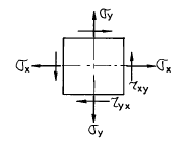
- 25.7
- 39.1
- 64.1
- 74.8
(정답률: 알수없음)
23. 그림과 같은 한 변의 길이가 a인 정사각형의 x축에 대한 단면 2차 모멘트 ⅠX를 구하면?
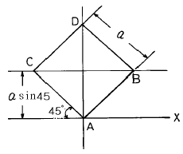
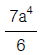
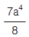
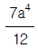
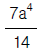
(정답률: 알수없음)
24. 그림과 같이 보의 전 길이 L에 균일분포하중 w(N/m)가 작용하고 있는 단순보의 처짐에 대한 설명으로 맞는 것은?
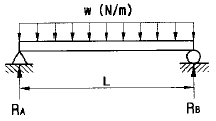
- 보의 길이의 네제곱(L4)에 반비례한다.
- 균일 분포하중의 제곱(w2)에 비례한다.
- 굽힘 강성계수 EI에 비례한다.
- 처짐각(기울기)이 0인 곳에서 최대 처짐이 발생한다.
(정답률: 알수없음)
25. 원형단면 축이 200N·m의 비틀림 모멘트를 받고 있다. 이 축의 허용 비틀림 응력이 5 MPa이라면 지름을 몇 cm로 하면 되겠는가?
- 2.95
- 5.89
- 7.4
- 14.28
(정답률: 알수없음)
26. 그림과 같은 보에서 최대 처짐은 몇 mm 인가? (단, ℓ=2m, a=1m, P=1000N, E=200GPa, I=1000㎝4 이다.)
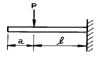
- 0.2
- 0.7
- 2.3
- 7.2
(정답률: 알수없음)
27. 양단 힌지이고 길이 3m, 지름 12cm의 강제 원형단면 기둥의 좌굴하중은 몇 MN 인가? (단, E = 100 GPa 이고 오일러의 식을 적용한다)
- 7.746
- 8.547
- 9.854
- 1.116
(정답률: 알수없음)
28. 그림과 같은 하중을 받는 단순보에서 지점 A, B에서의 반력 RA, RB 는?
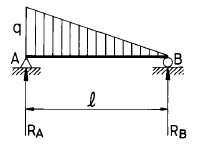
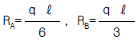
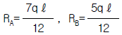
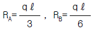
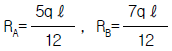
(정답률: 알수없음)
29. 그림과 같이 길이가 2m, 지름이 100mm인 원형 단면의 외팔보가 균일 분포 하중을 받고 있을 때 분포 하중의 크기 w는 몇 N/m 인가? (단, 보의 극한강도는 250MPa이고, 안전계수는 10 이다.)
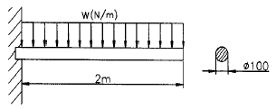
- 613
- 1227
- 2453
- 3679
(정답률: 알수없음)
30. 장주에서 오일러(Euler's)의 좌굴하중크기를 결정하는 요소가 아닌 것은?
- 전단력
- 탄성계수
- 단면2차 모멘트
- 기둥의 길이
(정답률: 알수없음)
31. 그림과 같은 돌출보에서 ωℓ =P 일때 이 보의 중앙점에서의 굽힘모멘트가 0 이 되기 위한 a/ℓ 의 값은?
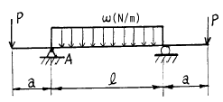
- 1/8
- 1/6
- 1/4
- 1/3
(정답률: 알수없음)
32. 연강의 인장시험에서 하중을 증가시킴에 따라 나타나는 기계적 성질을 순서대로 나타낸 것은?
- 비례한도 → 극한강도 → 항복점 → 파단점
- 비례한도 → 항복점 → 극한강도 → 파단점
- 항복점 → 비례한도 → 파단점 → 극한강도
- 항복점 → 극한강도 → 비례한도 → 파단점
(정답률: 알수없음)
33. 그림과 같은 보에서 D점의 굽힘 모멘트(moment)의 크기는 몇 N.m 인가?
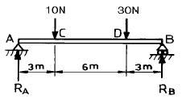
- 85
- 75
- 65
- 55
(정답률: 알수없음)
34. 콘크리트 벽돌을 이용하여 수직벽을 쌓으려 한다. 벽돌의 압축강도는 σC=10MPa이고, 비중량은 γ=19.6 kN/m3일 때 벽의 허용높이는 몇 m인가? (단, 안전계수는 S=15로 한다.)
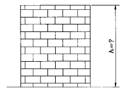
- 29.40
- 34.01
- 45.04
- 51.15
(정답률: 알수없음)
35. 0℃ 때 길이 10 m 인 재료가 있다. 30℃ 가 되면 이 재료의 늘어나는 길이는 몇 cm 인가? (단, 재료의 선팽창계수 α =1.1×10-5/℃이다.)
- 0.11
- 0.33
- 1.1
- 3.3
(정답률: 알수없음)
36. 그림과 같이 지름 20mm, 길이 1m의 강봉을 49 kN의 힘으로 인장했을 때, 이 강봉은 몇 cm가 늘어나는가? (단, 탄성계수 E=200 GPa)
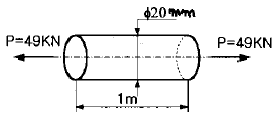
- 0.078
- 0.78
- 1.073
- 1.73
(정답률: 알수없음)
37. 그림에서 도심의 위치는 밑변에서 얼마의 위치에 있는가?
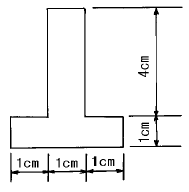
- 2.21 ㎝
- 1.93 ㎝
- 1.50 ㎝
- 1.22 ㎝
(정답률: 알수없음)
38. 길이 L인 단순보에 등분포하중 ω가 작용할 때 최대 굽힘모멘트는?
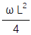
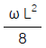
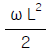
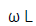
(정답률: 알수없음)
39. 그림과 같은 길이 ℓ = 4m, 단면 8cm×12cm인 단순보가 균일 분포하중 ω = 4kN/m을 받을 때 최대 굽힘응력은?
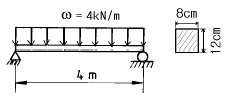
- 25.8 MPa
- 31.7 MPa
- 35.8 MPa
- 41.7 MPa
(정답률: 알수없음)
40. 지름 3㎝, 길이 1m의 연강봉의 한끝을 고정하고 다른 한 끝에 300N·m의 비틀림 모멘트를 작용시킬 때 이 봉의 바깥원주에 발생하는 전단응력은 몇 MPa인가?
- 18.5
- 32.4
- 45.6
- 56.6
(정답률: 알수없음)
3과목: 기계설계 및 기계재료
41. 담금질된 강의 경도를 증가시키고 시효변형을 방지하기 위한 목적으로 0℃ 이하의 온도에서 처리하는 방법은?
- 저온 담금 용해처리
- 시효 담금처리
- 냉각 뜨임처리
- 심냉처리
(정답률: 알수없음)
42. 다음중 기능성 재료에 해당하지 않는 것은?
- 형상기억 합금
- 초소성 합금
- 제진 합금
- 특수강
(정답률: 알수없음)
43. 마찰차의 접촉면에 종이, 가죽 및 고무 등의 비금속 재료를 붙이는 이유는 무엇인가?
- 마찰각을 작게 하기 위하여
- 마찰차의 마멸을 방지하기 위하여
- 마찰계수를 크게 하기 위하여
- 회전수를 줄이기 위하여
(정답률: 알수없음)
44. 켈밋(kelmet)은 베어링용 합금으로 많이 사용된다. 성분은 구리(Cu)에 무엇을 첨가한 합금인가?
- 아연(Zn)
- 주석(Sn)
- 납(Pb)
- 안티몬(Sb)
(정답률: 알수없음)
45. 폭(b) × 높이(h) = 10 X 8인 묻힘키이가 전동축에 고정되어 25,000 ㎏f.㎜의 토크를 전달할 때, 축지름 d는 몇 ㎜정도가 적당한가? (단, 키이의 허용 전단응력은 3.7 ㎏f/㎜2 이며, 키이의 길이는 46㎜ 이다.)
- d = 29.4
- d = 35.3
- d = 41.7
- d = 50.2
(정답률: 알수없음)
46. 양은(洋銀, Nickel-silver)의 구성 성분은?
- Cu-Ni-Fe
- Cu-Ni-Zn
- Cu-Ni-Mg
- Cu-Ni-Pb
(정답률: 알수없음)
47. 강에 함유되어 있는 황(S)의 편석이나 분포 상태를 검출하는데 사용되는 검사법은?
- 감마선(γ)검사법
- 설퍼 프린트법
- X-선 검사법
- 초음파 검사법
(정답률: 알수없음)
48. 회전속도가 200rpm으로 10㎰을 전달하는 연강 실체원축의 지름이 얼마 정도인가? (단, 허용응력 τ = 210㎏f/㎝2이고, 축은 비틀림 모멘트 만을 받는다.)
- d = 44.3㎜
- d = 49.1㎜
- d = 54.7㎜
- d = 59.8㎜
(정답률: 알수없음)
49. 담금질시 냉각의 3단계를 거쳐 상온에 도달하는데 냉각되는 순서로 맞는 것은?
- 증기막단계 → 대류단계 → 비등단계
- 대류단계 → 비등단계 → 증기막단계
- 대류단계 → 증기막단계 → 비등단계
- 증기막단계 → 비등단계 → 대류단계
(정답률: 알수없음)
50. 순철에는 없으며, 강의 특유한 변태는?
- A1
- A2
- A3
- A4
(정답률: 알수없음)
51. 저널의 지름이 25 mm, 길이가 50 mm, 베어링하중이 3000kgf인 저어널 베어링에서 베어링 압력(kgf/mm2)은?
- 2.4
- 3.0
- 3.6
- 4.2
(정답률: 알수없음)
52. 볼베어링에서 베어링 하중을 2배로 하면 수명은 몇 배로 되는가?
- 4배
- 1/4배
- 8배
- 1/8배
(정답률: 알수없음)
53. 50kgf의 하중을 받고 처짐이 16mm생기는 코일스프링에서 코일의 평균직경 D=16mm, 소선직경 d=3mm, G=0.84×104kgf/mm2 이라 할 때 유효권수 n은 얼마인가?
- 3
- 5
- 7
- 9
(정답률: 알수없음)
54. 축간거리 55 ㎝인 평행한 두축 사이에 회전을 전달하는 한쌍의 평기어에서 피니언이 124 회전할 때 기어를 96회전 시키려면 피니언의 피치원지름을 얼마로 하면 되겠는가?
- 124㎝
- 96㎝
- 48㎝
- 62㎝
(정답률: 알수없음)
55. 2톤의 하중을 들어 올리는 나사 잭에서 나사 축의 바깥지름을 구한 것으로 맞는 것은? (단, 허용인장응력 = 6㎏f/㎜2이고, 비틀림 응력은 수직응력의 1/3 정도로 본다.)
- 24㎜
- 26㎜
- 28㎜
- 30㎜
(정답률: 알수없음)
56. 주조, 단조, 리벳이음 등에 비해 용접 이음의 장점으로 틀린 것은?
- 사용재료의 두께 제한이 없다.
- 기밀 유지에 용이하다.
- 작업 소음이 많다.
- 사용기계가 간단하고, 작업 공정수가 적어 생산성이 높다.
(정답률: 알수없음)
57. 다음 중 비금속 재료는?
- Al2O3
- Au
- Ni
- Co
(정답률: 알수없음)
58. 경화능 향상에 효과적이며 첨가량이 1% 이상이면 결정입자를 조대화하여 취성을 크게 하는 성분은?
- Ni
- Cr
- Mn
- Mo
(정답률: 알수없음)
59. 24금이란 순금(Au) 몇 %가 함유된 것인가?
- 18
- 24
- 75
- 100
(정답률: 알수없음)
60. 마찰차의 응용범위와 거리가 가장 먼 항목은?
- 전달력이 크지 않고 속도비가 중요하지 않은 경우
- 회전속도가 커서 보통기어를 쓰기 어려울 경우
- 양 축간을 자주 단속할 필요가 있을 경우
- 정확한 속도비가 필요할 경우
(정답률: 알수없음)
4과목: 유압기기 및 건설기계일반
61. 건설기계 유압펌프의 종류에 속하지 않는 것은?
- 기어 펌프
- 베인 펌프
- 플런저 펌프
- 펠톤 펌프
(정답률: 알수없음)
62. 스크레이퍼의 구성부품이 아닌 것은?
- 차륜
- 견인차와 보올(bowl)
- 에이프런(apron)
- 삽날
(정답률: 알수없음)
63. 기중기 작업시 물체의 무게가 무거울수록 붐의 길이와 각도는 어떻게 해야 옳은가?
- 길이는 길게, 각도는 크게
- 길이는 길게, 각도는 작게
- 길이는 짧게, 각도는 작게
- 길이는 짧게, 각도는 크게
(정답률: 알수없음)
64. 유압 베인 모터의 1회전당 유량이 40[cc]인 경우 기름의 공급 압력이 70[㎏f/㎝2], 유량이 30[ℓ /min]이면 발생할 수 있는 최대 토크(torque)는 약 몇 [㎏f– m] 인가?
- 3.675
- 4.675
- 3.456
- 4.456
(정답률: 알수없음)
65. 보기와 같은 유압기호는 어느 것을 나타내는 기호인가?
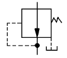
- 가변용량형 펌프
- 감압밸브
- 안로드 밸브
- 카운터 밸런스 밸브
(정답률: 알수없음)
66. 중량물을 달아올려 운반하는 기계로서, 예를 들면 타워크레인, 트럭크레인, 엘리베이터와 같은 기계의 명칭에 해당되는 것은?
- 호이스팅 머신(hoisting machine)
- 컨베이어벨트(conveyor belt)
- 트랙터(tractor)
- 트랙터드론왜건(tractor drawn wagon)
(정답률: 알수없음)
67. 다음은 포크 리프트에 사용되는 유압펌프에 대하여 설명한 것이다. 틀린 것은?
- 회전수의 큰 변동폭에 견딜 수 있어야 한다.
- 유압펌프는 대부분 엔진과 직결 구동된다.
- 소형의 방향제어밸브 사용으로 높은 피크 압 발생이 자주 일어난다.
- 대기 중에 노출되어 있으므로 유온 상승에 대한 염려가 없다.
(정답률: 알수없음)
68. 유압 회로에 사용되는 어큐물레이터의 사용상의 주의점 설명으로 틀린 것은?
- 수소를 충전해서는 안된다.
- 산소를 충전해서는 안된다.
- 질소를 충전해서는 안된다.
- 규정압 이상으로 충전해서는 안된다.
(정답률: 알수없음)
69. 로우더의 규격표시는 어떻게 하는가?
- 자중(kgf)
- 블레이드 길이(l)
- 들어올리는 무게(kgf)
- 표준버켓의 평적용량(m3)
(정답률: 알수없음)
70. 덤프트럭의 규격표시 방법으로 옳은 것은?
- 오일 탱크의 용량(ℓ)
- 최대 적재중량(ton)
- 시간당 작업량(m3/hr)
- 최대속도(m/sec)
(정답률: 알수없음)
71. 작동유의 산성을 나타내는 척도인 것은?
- 점도지수
- 소포성
- 인화점
- 중화수
(정답률: 알수없음)
72. 갱도에서 주로 상향의 구멍을 뚫는 데에, 이용되는 착암기는?
- 레그해머(leg hammer)
- 드리프터(drifter)
- 스토퍼(stopper)
- 싱커(sink)
(정답률: 알수없음)
73. 유량 제어 밸브를 액추에이터의 입구측에 설치한 회로로 공급 쪽 관로 내의 흐름을 제어함으로써 속도를 제어하는 회로는?
- 미터 인 회로
- 미터 아웃 회로
- 브레이크 회로
- 인터 로크 회로
(정답률: 알수없음)
74. 지름이 30cm인 관(管)속에 300kgf/s의 유체가 흐르고 있다면 관내의 평균 유속은 약 몇 [m/s] 인가? (단, 유체의 비중량은 1200kgf/m3 이다.)
- 0.354
- 3.54
- 41.44
- 4144
(정답률: 알수없음)
75. 콘크리트 재료의 계량, 배합, 혼합등 1인제어 방식을 취하고 품질관리의 기록카드가 자동으로 기록되는 기계는?
- 콘크리트 피니셔(Concrete finisher)
- 콘크리트 믹서(Concrete mixer)
- 배칭플랜트(Batching plant)
- 트랜싯 믹서(Transit mixer)
(정답률: 알수없음)
76. 유압기기 중 불필요한 오일을 탱크로 방출시켜 펌프에 부하가 걸리지 않도록 하는 밸브를 무엇이라 하는가?
- 감압 밸브(pressure reducing valve)
- 교축 밸브(flow metering valve)
- 카운터 밸런스 밸브(counter balance valve)
- 무부하 밸브(unloading valve)
(정답률: 알수없음)
77. 도로 포장 공사뿐 아니라 공항이나 항만, 건설공사 등에 사용하는 아스팔트 혼합재를 만드는 기계는?
- 아스팔트 믹싱 플랜트(mixing plant)
- 아스팔트 피니셔(finisher)
- 아스팔트 히터(heater)
- 아스팔트 디스트리뷰터(distributer)
(정답률: 알수없음)
78. 다음은 유압펌프 효율에 대한 설명이다. 틀린 것은?
- 용적효율은 이론적 펌프 토출량에 대한 실제 토출량의 비를 말한다.
- 기계적 효율은 구동장치로 부터 받은 동력에 대하여 펌프가 유압유에 작용한 이론 동력의 비이다.
- 유압 펌프의 용적효율은 사용 압력에 관계없이 항상 일정하다.
- 전효율은 용적효율과 기계적 효율의 곱으로 표시한다.
(정답률: 알수없음)
79. 불도저에서, 흙운반거리(m):D, 전진속도(m/min):V1, 후진속도(m/min): V2, 기어변속시간(min):t 라고할 때, 사이클 시간(min): Cm 을 구하는 옳은 식은?
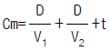
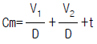
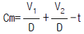
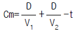
(정답률: 알수없음)
80. 작동유의 점도가 너무 낮을 경우 설명 중 틀리는 것은?
- 유압 펌프나 유압 모터의 용적효율이 증가한다
- 내부 오일 누설이 증가한다.
- 압력 유지가 곤란하다.
- 마모가 증대한다.
(정답률: 알수없음)